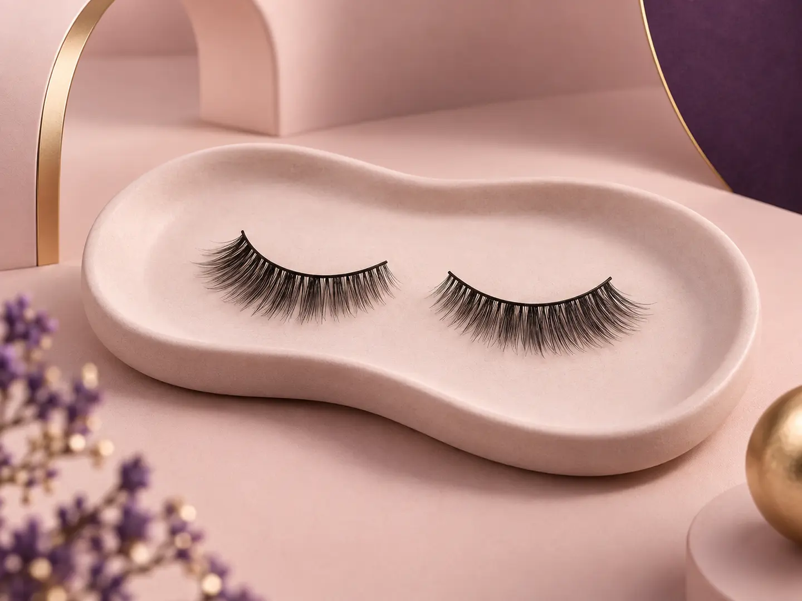

01
Strip Eyelashes
Balanced full-band styles ranging from refined everyday definition to expressive volume.
Refined silhouettes, lightweight wear, and skilled Indonesian craft for beauty partners around the world.
Discuss Your Collection
Eyelashes are small objects with a remarkable demand for precision. Shape, fibre placement, density, and balance all influence how a style looks and feels.
Royal Grace Global connects that detail-oriented Indonesian craft with brands seeking natural beauty, flexible development paths, and attentive partnership.
Explore ready-to-style lash forms and materials that can support different market and brand directions.
Balanced full-band styles ranging from refined everyday definition to expressive volume.
Flexible lash elements for targeted placement, custom looks, and professional artistry.
Material pathways for beauty partners developing their own product concepts and finishing.
Layered fibre patterns shaped for softness and believable definition.
Considered density and form with comfortable wear in mind.
Human attention where symmetry, spacing, and refinement matter.
Product conversations that begin with your audience and collection goals.
Beauty markets move quickly, but strong products begin with clear intent. We help partners connect desired style, audience, and product format in one focused conversation.
Share your target customer, preferred style direction, and commercial priorities with Royal Grace Global.
Explore Eyelash Partnership